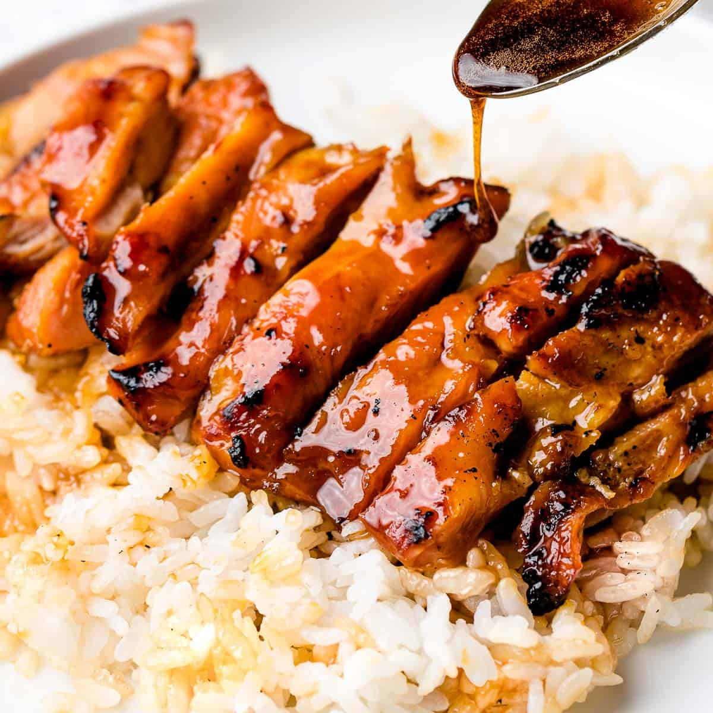

Teriyaki

This is a recipe for a chicken teriyaki.
Ingredients:
- 2 tablespoons sake
- 1/4 cup mirin
- 1/4 cup soy sauce
- 2 tablespoons light brown sugar
- 2 teaspoons grated fresh gingerroot
- Splash sesame oil
- 1 3/4 pounds chicken thigh fillets
- 1 teaspoon peanut oil
- 1 3/4 to 2 1/2 cups sushi rice
Steps:
- Combine the sake, mirin, soy sauce, sugar, ginger and sesame oil in a dish that you can steep the chicken in,
(I use a 23cm square dish, but anything of similar dimensions would do).
- For the sushi roll: On a sushi mat lay down the nori. Spread the sushi rice over the nori in an even layer.
Place the salmon horizontally over the bottom third of the sheet, about 1 inch from the edge.
Add the prepared chicken pieces and leave for 15 minutes.
-
Heat the peanut oil in a large shallow frying pan or casserole (that has a lid) over medium heat.
Using a slotted spoon, transfer the chicken pieces from the marinade to the pan.
Saute them until they look cooked on the outside.
-
Add the marinade to the chicken pieces and bring to a bubble, then turn down the heat to a gentle simmer,
put the lid on and cook for about 5 minutes. Cut into a piece of chicken to make sure it's cooked through.
-
Remove the cooked pieces with a slotted spoon (you could keep them in a bowl covered in aluminum foil to keep them warm)
and turn the heat up under the pan to let the liquid boil down to a thick dark syrup.
-
Return the chicken pieces back to the pan, stir well so that all the chicken pieces are coated in the sticky savory syrup.
Serve with a comforting pile of sushi rice and perhaps some steamed baby bok choy or other veggies of your choice.